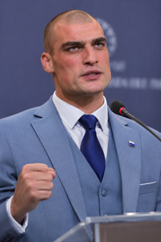

Деглянская Республика


Деглянская Республика (дегл. Deglänska Republyka, згур. Degljanska Republyka, сокращённо ДР, неофициально Деглия) — одно из двух фактически существующих непризнанных государств Бывшей Верхней Паннонии (БВП). ДР как политическая единица сформировалась в ходе верхнепаннонской гражданской войны в 1992-1993 годах и была официально провозглашена 16 ноября 1994 года. Государство не поддерживает формальных дипломатических отношений ни с одной страной, фигурирует в международных документах как «Деглянская зона» и официально контактирует с внешним миром только через Наблюдательную миссию ООН по Бывшей Верхней Паннонии. Дипломатическому признанию препятствует отсутствие мирного соглашения со второй стороной конфликта — Згурской Республикой; хотя боевые действия между ними прекратились в 1995 году после подписания Лозаннских соглашений, спорные вопросы до сих пор не урегулированы, и позиции сторон по-прежнему несовместимы.
Исторический очерк
После убийства королевы Людмилы 17 сентября 1994 года и срыва перемирия исчезла всякая надежда на восстановление единого паннонского государства. На фоне возобновившейся войны в ноябре 1994 года в Южной Вроновице собрался Деглянский национальный конгресс, в который вошли деглянские депутаты и авторитетные полевые командиры; 16 ноября он провозгласил независимость Деглянской Республики. Лозаннские соглашения 1995 года были заключены между представителями Згурской и Деглянской республик как независимых государств, хотя дипломатически они друг друга не признавали. 1 сентября 1995 года в ДР прошёл референдум по Конституции; она была принята 76% голосов. Конституция провозглашала Деглию парламентской республикой без поста президента. Первые парламентские выборы 20 февраля 1996 года с подавляющим перевесом выиграл блок «Деглянский народный фронт — Деглянская социалистическая партия» (ДНФ-ДСП); премьер-министром стал бывший полевой командир Марко Каженец.
В правление ДНФ-ДСП сохранялось влияние полевых командиров, которые, формально распустив свои армии, всё ещё обладали массой вооружённых сторонников и не стеснялись навязывать свою политическую волю силой. Обычным делом были вооружённые разборки, политические убийства и похищения, силовые захваты государственных органов. Слабое правительство не могло навести порядок, тем более что его члены куда больше заботились о собственном обогащении. Крушение финансовой пирамиды «Сфинкс Капитал» спровоцировало массовые протесты, заставившие кабинет Каженца уйти в отставку и объявить досрочные выборы (2 октября 1998 года). Протестное голосование привело к власти «Европейский путь» — партию, резко оппозиционную курсу ДНФ-ДСП. Партия во главе с 35-летним Марианом Грезденским выступала под лозунгами «нормализации», требуя покончить с засильем полевых командиров, установить власть закона и заключить мирный договор со Згурской Республикой, открывающий путь к дипломатическому признанию и дальнейшей интеграции в Европу.
Ничего из этого сделать не удалось. На переговорах со згурцами под эгидой ЮНОМФУП Грезденский выказал готовность заключить мир даже ценой уступок; згурцы, расценив это как слабость, потребовали новых уступок. Ища поддержки на Западе, Грезденский начал тайные переговоры о выдаче военных преступников Международному трибуналу по БВП в Гааге. Об этом узнали полевые командиры, которые по-прежнему контролировали все силовые структуры. Гаагский трибунал грозил каждому из них. Командиры отложили разногласия, составили заговор и 23 марта 1999 года произвели военный переворот. Грезденский и другие лидеры «Европейского пути» были арестованы, парламент и правительство распущены. Путчисты, не раскрывавшие своих лиц и имён, провозгласили себя «Секретным контрольным комитетом» (СКК) и объявили военное положение «вплоть до окончательного урегулирования конфликта». Протестов не последовало: избиратели успели разочароваться в «Европейском пути», не выполнившем ни одного из своих обещаний.
Переворот чуть не привёл к возобновлению войны. Згурская Республика также объявила военное положение и мобилизовала армию; ЮНОМФУП и ЕС резко осудили переворот, ввели санкции и потребовали восстановления законной власти; финансовая помощь ДР была заморожена. После месяца напряжённых переговоров удалось достичь компромисса: СКК освободил арестованных и договорился со згурцами о снижении военного напряжения. Финансовая помощь так и не была возобновлена, но санкции частично сняли, а сотрудничество с ЮНОМФУП постепенно восстановили. Режим военного положения сохраняется в Деглии до сих пор (2026); СКК по-прежнему стоит у власти.
Государственное устройство и политика
Конституция 1995 года формально действует по сей день, но её ключевые статьи были приостановлены в 1999 году Законом о военном положении. Последний фактически и является действующей конституцией страны. Юридически это обосновывается тем, что пока не заключён мирный договор со згурцами, ДР находится в состоянии войны.
Секретный контрольный комитет
Согласно Закону о военном положении, СКК является чрезвычайным органом власти, ответственным за безопасность страны. СКК объединяет в себе законодательную, исполнительную и судебную власть: он назначает правительство и судей, утверждает бюджет и законодательные акты, служит высшей апелляционной инстанцией, а также издаёт собственные указы, имеющие приоритет над законами и постановлениями правительства. После 2020 года нормотворческая активность СКК резко снизилась, и он перестал отменять постановления правительства, что раньше случалось нередко.
Личный состав СКК и порядок назначения его членов являются военной тайной. Впрочем, первоначальный состав был очевиден: в СКК вошли командиры тех самых воинских частей, которые 23 марта 1999 года захватили правительственные здания. Среди них были полевые командиры, печально прославившиеся военными преступлениями в ходе войны 1992-1995 гг.: Жельо «Спайдермен» Тотов, Мартын «Князь» Брегови, Антон «Леопард» Пекарчик, Катарина «Рыжая» Бранкова, а также бывший премьер Каженец и, вероятно, ещё несколько человек, о которых с момента переворота нет никаких упоминаний: они как будто бесследно исчезли вместе с семьями.
Тотов умер в 2020 году, Пекарчик — в 2023-м. Лишь после их смерти было официально объявлено об их членстве в СКК. Обоих похоронили с государственными почестями. Других подобных событий не было, откуда можно заключить, что остальные члены СКК первоначального состава ещё живы. Младшему из них, Мартыну Брегови, 62 года (2026). Кооптировался ли кто-нибудь на место выбывших, неизвестно. Исчезновений после 1999 года не было; если кто-то и был включён в СКК, он скрывает этот факт и продолжает жить обычной жизнью.
Законодательное Совещание
Парламентские выборы в ДР с 1999 года не проводились. Неким подобием парламента является Законодательное Совещание, составленное из делегатов от муниципальных советов, профсоюзов, отраслевых ассоциаций и других общественных организаций, утверждённых СКК. Оно не обладает законодательной властью, а может лишь принимать законопроекты и подавать их на одобрение СКК. Законопроекты вносит правительство; обсуждение и голосование проходят в закрытом режиме. До 2020 года СКК нередко отклонял или возвращал законопроекты на доработку; с тех пор все они утверждаются без поправок.
Премьер-министр и кабинет


Кабинет во главе с премьер-министром назначается СКК и отвечает перед ним же. С 2018 года должность премьер-министра занимает Богдан Равчик (р. 1978), представитель молодого поколения, первый из премьеров, не участвовавший в войне. В его правление произошли важные и не до конца понятные перемены в деглянской политической системе. В июне 2020 г., в разгар пандемии COVID-19, вскоре после смерти Жельо Тотова, павшего её жертвой, Равчик произвёл нечто вроде внутреннего переворота: министры финансов и внутренних дел были арестованы по обвинению в государственной измене. Обоим вменялась работа на згурскую разведку и заговор с целью убийства членов СКК. Суд, проходивший в закрытом режиме, приговорил обоих к расстрелу. Приговор привели в исполнение в декабре 2020 г. Ещё раньше Равчик внёс существенные изменения в Закон о военном положении: если прежде важнейшие министры и председатель Законодательного Совещания могли непосредственно общаться с членами СКК, то теперь «по соображениям безопасности» это право осталось только у премьера. Новый закон, сделавший премьер-министра единственным передаточным звеном между СКК и несекретной частью государственного аппарата, был принят Законодательным Совещанием и утверждён СКК без каких-либо поправок.
Оппозиция

Политические партии в Деглии запрещены Законом о военном положении, как и любая оппозиционная деятельность. Когда иностранные СМИ упоминают «деглянскую демократическую оппозицию», они имеют в виду фонд «Деглянская гражданская инициатива» (ДГИ) — НКО во главе с бывшим премьером от «Европейского пути» Марианом Грезденским. ДГИ не занимается политической деятельностью, а лишь выпускает ежегодные бюллетени, где публикует факты всевозможных нарушений прав и законов властями ДР. Ежегодник печатается за границей, но Грезденский живёт в Деглии. После каждого нового выпуска его арестовывают и приговаривают к крупному штрафу (20-30 млн евро). Штраф выплачивается из гранта ЕС «на поддержку институтов гражданского общества в БВП».
Ситуация выглядит несколько абсурдно (что вообще характерно для ДР): ЕС отказывает в финансовой помощи авторитарному деглянскому режиму, но фактически субсидирует его, используя в качестве посредника фонд Грезденского. Эта практика часто вызывает критику в ЕС, но в принципе всех устраивает, включая самого Грезденского, который давно принял правила игры. Между ДГИ и деглянскими властями сложилось своеобразное сотрудничество. Власти сами сливают Грезденскому сведения о нарушениях прав человека (понятно, что никаких независимых информаторов у него нет) и поддерживают его статус монополиста в правозащитной деятельности, беспощадно пресекая в зародыше любые альтернативные проекты.
Судебная власть
Закон о военном положении приостановил действие статей Конституции о независимости суда. Все судьи в стране назначаются СКК по представлению Министерства юстиции (после 2020 года СКК утверждает все его кандидатуры без возражений). Параллельно обычным судам существуют чрезвычайные, рассматривающие в закрытом режиме дела об измене и других государственных преступлениях.
СКК сам является высшей судебной инстанцией и изредка рассматривает дела особой важности; однако в «деле двух министров» 2020 года он лишь утвердил приговор чрезвычайного суда.
Региональное и местное управление
ДР делится на столицу Вроновицу (фактически только три южных округа — Пятый, Шестой и Седьмой) и пять уездов. Во главе каждой из этих единиц стоит губернатор, назначаемый СКК; они делятся на муниципалитеты. Во Вроновице муниципалитетов три, и они совпадают с округами. В уездах муниципалитеты мельче и многочисленнее: каждый включает город или крупное село с прилегающей округой. Муниципалитеты пользуются самоуправлением и управляются выборными советами. Муниципальные выборы — единственные выборы в Деглии в период военного положения. Вполне свободными их не назовёшь, но они конкурентны и порой проходят очень оживлённо, давая выход политическим страстям, которым нет места на национальном уровне. Верховная власть сознательно поощряет эту конкуренцию, не давая сложиться устойчивым местным правящим кликам.
Поскольку партии запрещены, допускается только самовыдвижение. Кандидатуры утверждает Полиция безопасности, которая может отклонить подозрительного кандидата без объяснения причин. Её решение можно обжаловать в СКК как в высшем суде, но случаи его отмены неизвестны. Зарегистрированные кандидаты получают на кампанию государственное финансирование; частное спонсорство запрещено. Агитация может касаться только вопросов местного самоуправления; критика военного положения и центральных властей вообще недопустима и ведёт к снятию кандидата.
| № п/п | Территориальная единица | Население (2025) |
|---|---|---|
| 1 | Вроновица | 347670 |
| 2 | Гоубкаславский | 129706 |
| 3 | Кролово-Железенский | 93390 |
| 4 | Рудецкий | 49911 |
| 5 | Зоржинский | 34494 |
| 6 | Дрожинский | 29321 |
Вооружённые силы
Деглянский правящий режим, военный по своему происхождению, всегда уделял армии повышенное внимание. Лозаннские соглашения запретили обоим государствам БВП иметь призывную армию. Деглия соблюдает этот запрет, но нашла способ фактически обойти его. Вооружённые силы ДР состоят из Деглянской национальной армии (ДНА), комплектуемой на добровольной основе, и Службы гражданской обороны (СГО), где все граждане мужского пола служат в обязательном порядке с 18 до 21 года. Эта двойственная структура наследует традиции вооружённых сил социалистической Верхней Паннонии с регулярной армией и территориальным резервом. Официально СГО не считается призывной армией, поскольку летального оружия служащим не выдают: их обучают на макетах или пейнтбольных ружьях. Численность СГО — около 12 000 человек, штат ДНА — около 8000 военнослужащих.
ДНА подчинена Министерству обороны через Генеральный штаб. Её основу составляют две механизированные бригады: Вроновицкая и Гоубкаславская. Кроме того, в ДНА входят артиллерийский полк, дивизион противовоздушной обороны, вертолётная эскадрилья, инженерный батальон и батальон связи, а также полк специального назначения, до 2020 года подчинявшийся непосредственно СКК, а с тех пор — непосредственно премьер-министру. СГО подчинена МВД и устроена по территориальному принципу: Вроновица и каждый уезд выставляют по полку, каждый муниципалитет — по роте. Помимо строевой подготовки, служащие СГО роют окопы, разбирают завалы, ремонтируют дороги и убирают урожай на государственных фермах; на уборку урожая уходит до трети срока службы.
С 1999 года против деглянской армии действует эмбарго США и ЕС на поставки вооружения. Это не мешает ей закупать оружие в ряде незападных стран и на мировом чёрном рынке. Стрелковое оружие, мины и миномёты по-прежнему выпускает один из «номерных» заводов в Гоубкаславе, доставшийся Деглии вместе с городом. Тяжёлая техника закуплена в 2000-х годах через посредников: около 60 танков Т-72 белорусской модернизации, китайские реактивные системы залпового огня и вертолёты Ми-24 из бывших советских республик; с 2021 года армия получает иранские ударные беспилотники.
Расходы на армию составляют около 70 млн евро в год (10% бюджетных расходов). Офицерский состав готовится во Вроновицкой военной академии. По сравнению со згурской армией деглянская не только в семь раз больше, но и гораздо лучше вооружена, экипирована, обучена и мотивирована. Несмотря на очевидное превосходство, ДР официально и безоговорочно отказывается от агрессии: «Мы твёрдо соблюдаем Лозаннские соглашения и ни при каких обстоятельствах не применим силу первыми». Военная мощь ДР служит скорее рычагом, позволяющим добиваться выгодных условий в соглашениях с ЮНОМФУП и другими международными структурами, чем непосредственно силовым инструментом.
Правоохранительные органы
Полиция в Деглии централизована и подчиняется МВД. Помимо неё, часть полицейских функций исполняют две спецслужбы: Полиция безопасности (подчинена СКК напрямую) и армейская контрразведка (подчинена Министерству обороны). Полномочия всех этих органов широки, нечётко определены и во многом пересекаются, что порождает конкуренцию. Контрразведка ведает всем, что касается иностранцев на территории ДР (и в этом конкурирует ещё и с разведкой, тоже армейской). Каждый иностранец, въезжающий в Деглию, вполне открыто и официально находится под её наблюдением, о чём рассказано в статье о въезде в БВП.
Численность полиции и спецслужб засекречена. В публикуемом варианте бюджета расходы на них проходят по единой статье «правопорядок и общественная безопасность». Они составляют около 7% бюджета, но фактически эти ведомства получают гораздо больше за счёт узаконенного самофинансирования. У каждого предприятия есть куратор, которому оно вполне официально отдаёт часть прибыли. Обычные гражданские предприятия курирует полиция, торгующие с заграницей — контрразведка, крупные, работающие на армию или силовые структуры, — Полиция безопасности. Хотя эту систему трудно назвать иначе как институционализированным взяточничеством, предприниматели, имеющие опыт работы и в ЗР, и в ДР, ценят её выше совершенно неформальных и ничем не ограниченных поборов згурских чиновников.
Роль Миссии ООН
Наблюдательная миссия ООН (ЮНОМФУП) с 1999 года отказывает деглянскому правительству в легитимности, но признаёт его «фактически обладающим властью и вменяемым в части ответственности за соблюдение Лозаннских соглашений». Поэтому Миссия сотрудничает с ДР на тех же основаниях, что и с ЗР, легитимность правительства которой не вызывает вопросов. Стороны Лозаннских соглашений обязались избегать насильственного решения конфликтов и соблюдать права человека, а ЮНОМФУП получила право следить за выполнением этих обязательств. В рамках этого мандата наблюдатели ЮНОМФУП присутствуют во всех государственных органах ДР, включая СКК. Наблюдатель от Миссии в СКК подписывает особое соглашение о соблюдении секретности, и его сообщения не входят в официальные публикации ЮНОМФУП.
Наблюдатели ЮНОМФУП собирают информацию и публикуют отчёты, но напрямую в работу государственного аппарата не вмешиваются. Официально у ЮНОМФУП нет властных полномочий на деглянской территории. Насколько велико её фактическое влияние, сказать сложно. Деглия, в отличие от Згурии, не зависит от международной финансовой помощи (если не считать грантов для ДГИ), но всё же сильно нуждается в ЮНОМФУП как в посреднике во внешних сношениях. Мнение, будто деглянское правительство не принимает ни одного важного политического решения без консультаций с Нейтральной зоной, возможно, недалеко от истины.
Внешняя политика
ДР не признана дипломатически ни одной страной, не является членом ООН и других международных организаций и официально сносится с другими государствами только при посредничестве ЮНОМФУП. Сомнительная легитимность её правительства после 1999 года усугубляет изоляцию, сужая возможности внешних сношений даже по неофициальным каналам. Деглянское правительство, в отличие от згурского, признаёт этот факт и не пытается имитировать внешнеполитическую деятельность. Министерства иностранных дел нет; связями с ЮНОМФУП ведает специальный правительственный комитет.
Демография

В 2025 году официально зарегистрированное население ДР составило 684 492 человека. Независимые демографы сомневаются в этой цифре. С одной стороны, в подсчёт не включено большинство цыган, которые обычно избегают регистрации и переписей; их численность оценивается в 50-70 тыс. человек — почти 10% зарегистрированного населения. С другой стороны, местные власти заинтересованы в завышении численности населения своих территорий: отток населения или низкая рождаемость свидетельствуют против губернатора и могут послужить причиной или предлогом для его отставки. Давно эмигрировавшие или умершие люди годами продолжают числиться в списках; в опустевших малых городах и сёлах доля таких «мёртвых душ» может достигать 20% от фактической численности населения.
Этнические дегляне составляют 99% населения. Згурцев насчитали всего 150 человек, а представителей остальных национальностей (зарегистрированных цыган, венгров, немцев, евреев, южнославянских народов и др.) — 8753. Это разительный контраст с данными переписи 1985 года, когда згурцы составляли 38%, дегляне — 53%, остальные национальности — 9%. Сильнее всего состав населения изменился в годы гражданской войны (1992-1995), когда почти все згурцы уехали в згурскую зону, а жившие там дегляне переселились в деглянскую. Поскольку згурцев было больше, этот обмен уменьшил общее население ДР примерно на 100 тыс. человек. С тех пор население продолжает неуклонно сокращаться, в среднем на 5 тыс. человек в год, из-за эмиграции, снижения рождаемости и роста смертности, вызванного старением населения. Деглянские города по-прежнему недонаселены, и даже Южная Вроновица, куда стеклись почти все деглянские репатрианты из згурской зоны, полна пустующих зданий.
Экономика
Экономика Деглии пребывает в перманентной депрессии, но всё же в несколько лучшем состоянии, чем у соседней Згурии. ВВП на душу населения оценивается примерно в 3 500 евро. Месторождения железной руды в Кроловых Железнях разрабатываются с XIX века, но всё ещё не исчерпаны. Гоубкаславская ГЭС, находящаяся в совместной згурско-деглянской эксплуатации, отдаёт в ДР 50% мощности. Коммунисты построили в Верхней Паннонии довольно мощную индустрию, сосредоточенную в основном в южной части страны, то есть как раз в будущей деглянской зоне. Хотя большинство этих заводов после 1989 года пришло в упадок и закрылось, немногие уцелевшие продолжают работать: металлургические, химические, нефтеперерабатывающие. Сталь даже идёт на экспорт. Однако промышленность недостаточно прибыльна и страдает от нехватки инвестиций; оборудование почти не модернизируется, новые предприятия не строятся.
Значительную часть Деглии занимают горы и леса. Сельскохозяйственных угодий мало. Большую часть продовольствия страна импортирует. Сельское хозяйство убыточно, и крупные аграрные предприятия, обслуживающие армию, национализированы. Единственная прибыльная культура — конопля; её выращивание в ДР легально, но требует лицензии спецслужб. Слухи о горных плантациях опийного мака, якобы принадлежащих лично членам СКК, устойчивы, но остаются неподтверждёнными.
Финансы
Национальная валюта — деглянский злотник — введена в 1997 году взамен ходивших до того немецких марок и купонов военного времени. Официальная инфляция составляет около 6% в год, оценки ЮНОМФУП вдвое-втрое выше. Сделки в евро и иных иностранных валютах запрещены. Частным лицам разрешено покупать и продавать валюту в пределах определённой суммы; для более крупного обмена требуется разрешение контрразведки. В настоящее время (ноябрь 2026 года) курс колеблется около 90 злотников за евро.
Годовой бюджет ДР — около 700 млн евро в эквиваленте. Около трети доходов дают налог на прибыль и дивиденды крупнейших предприятий — металлургических, нефтеперерабатывающих и химических; почти во всех государство является крупнейшим акционером или единственным владельцем. Ещё около трети приходится на НДС и акцизы, около 15% — на подоходный налог, который удерживают у источника. Экспортные пошлины на сталь приносят около 10%. Остальное — лицензионные сборы с плантаций конопли, налоги с переводов эмигрантов и штрафы, среди которых заметную долю составляют штрафы ДГИ (около 4% доходов). Уклонение от налогов по Закону о военном положении считается подрывом обороноспособности и рассматривается чрезвычайными судами; поэтому, а также благодаря системе кураторов, хорошо осведомлённых о доходах подопечных предприятий, налоги собираются гораздо полнее, чем в Згурии. Бюджет почти сбалансирован.
В 2019 году Министерство финансов выдвинуло проект национальной криптовалюты — стейблкойна, привязанного к злотнику. Цель состояла в том, чтобы добиться независимости от ЮНОМФУП в трансграничных платежах, проводя расчёты в криптовалюте без участия Расчётной палаты БВП. СКК утвердил проект, но тот заглох после «дела двух министров», одним из которых был как раз министр финансов.
Права человека и гражданские права
По Лозаннским соглашениям ДР обязалась соблюдать права человека и гражданина и закрепила это обязательство в Конституции. Закон о военном положении его не отменил, и оно не пустой звук. Деглия демонстративно тщательно соблюдает букву Лозаннских соглашений, что выделяет её среди других авторитарных государств. Наблюдатели ЮНОМФУП имеют доступ во все её государственные органы, включая полицию, спецслужбы и тюрьмы, причём их мандат касается именно мониторинга соблюдения прав человека. Вмешиваться они не могут, но обладают неприкосновенностью и докладывают обо всём, что видят.
Такой надзор, разумеется, не нравится деглянской бюрократии, и она делает всё, чтобы превратить его в формальность и выхолостить. Отчасти ей это удаётся. Например, один из дополнительных регламентов к Лозаннским соглашениям устанавливает минимальную численность наблюдателей: в каждом министерстве должен быть хотя бы один. В ответ деглянское правительство наплодило сотни фиктивных министерств, каждое из которых занимает в лучшем случае один кабинет, а то и один стол в открытом офисе. ЮНОМФУП вынуждена держать наблюдателя при каждом и в результате не может направить достаточно людей туда, где они действительно нужны. На всё гигантское Министерство внутренних дел с полицией, тюрьмами, лагерями и Службой гражданской обороны приходится лишь трое наблюдателей, а на Полицию безопасности со всеми её архивами досье и допросными комнатами — всего один, столько же, сколько на Министерство по снабжению реактивами школьных химических лабораторий.
Наблюдателям Департамента мониторинга ЮНОМФУП приходится полагаться не столько на собственные наблюдения, сколько на жалобы и сообщения информаторов, в которых недостатка нет. Ежегодный отчёт ЮНОМФУП полон более или менее подтверждённых свидетельств о произволе властей, пытках, судебных и внесудебных репрессиях, необоснованных запретах на выезд, вмешательстве в частную жизнь и т. д. Их дополняют и отчасти подтверждают независимые отчёты ДГИ. Из года в год Миссия ООН заключает, что положение с правами человека и гражданина в Деглии гораздо хуже, чем в Згурии, и это неизменно вызывает возмущение деглянских СМИ, обвиняющих Миссию в пристрастности и двойных стандартах.
Коррупция
Принято считать, что деглянский чиновник менее коррумпирован, чем згурский. Вероятно, так оно и есть — и не только потому, что трудно представить себе чиновника коррумпированнее згурского. С 2002 года коррупция в Деглии (причём понимаемая очень широко) карается смертной казнью для обеих сторон сделки. На деле казнят только за крупные взятки и махинации, но всё же два-три смертных приговора в год выносится, и как мера устрашения это работает. Кроме того, поборы силовиков отчасти узаконены системой кураторов, описанной выше. В результате, по единодушным рассказам путешественников и местных жителей, деглянский полицейский или дорожный инспектор действительно не берёт взяток, и вопросы с чиновниками низшего звена, как правило, тоже решаются без них. Это не значит, что коррупции нет: она отчасти институционализирована, отчасти перенесена на более высокие уровни и в закрытые сети хорошо знакомых и доверяющих друг другу людей.
Интернет
Свобода слова в Деглии ограничена. Закон о военном положении запрещает любую оппозиционную деятельность, под которую подпадает практически любая критика властей, в том числе критика самого Закона и призывы к его отмене. Это касается не только публичных, но и частных высказываний. Приговоры «за незаконную оппозиционную деятельность» выносятся десятками в год; наказание — от крупного штрафа до пяти лет лишения свободы. Потребление запрещённой информации тоже уголовно наказуемо, хотя и мягче.
На момент военного переворота интернета в ДР почти не было. Он развивался уже при военном положении и с самого начала — в условиях ограничений. Провайдеры предоставляют доступ по личному номеру, который передаётся в заголовке каждого веб-запроса, что исключает анонимность. В наказание (как правило, за «потребление информационных материалов, нарушающих Закон о военном положении») доступа в интернет могут лишить на время или пожизненно. Способы обойти деанонимизацию известны, но тоже наказуемы — по крайней мере в теории. На деле деглянская Полиция безопасности технически недостаточно оснащена, чтобы отслеживать весь трафик или эффективно блокировать внешние ресурсы.
Категории: Постсоциалистическая эпоха, Страны